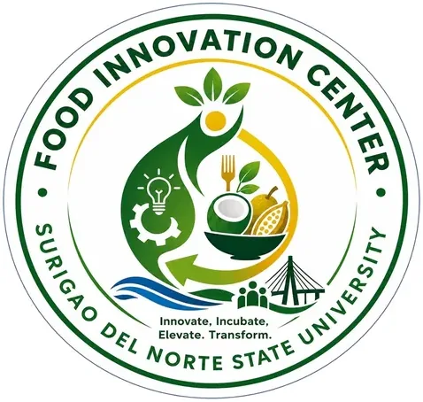

Caraga FIC — Surigao del Norte State University (SNSU)
Surigao del Norte State University (SNSU) · Region XIII
The Caraga FIC at Surigao del Norte State University (SNSU) is a DOST-funded Food Innovation Center located in Surigao City, Surigao del Norte. As one of the member institutions of the Caraga Food Innovation Consortium (CFIC), SNSU's FIC provides food entrepreneurs, MSMEs, and agri-based businesses across Surigao del Norte with access to specialized food processing equipment, product development expertise, and regulatory support.
- Category
- Food Innovation Center
- Host institution
- Surigao del Norte State University (SNSU)
- City
- Magpayang, Mainit, Surigao del Norte
- Region
- Region XIII
- Operating status
- Operating
About the Center
The SNSU FIC contributes to the Caraga region's food processing sector by supporting the development of value-added products from local agricultural commodities, helping producers upgrade to meet national food safety and market standards.
Programs & Services
- Product Development — R&D assistance for new food products from concept to prototype
- Food Safety & Regulatory Assistance — Support for FDA registration, HACCP, and food safety compliance
- Packaging & Nutrition Labeling — Label design, nutritional analysis, and packaging guidance
- Product Costing — Cost analysis and pricing strategy for food SMEs
- Equipment Rental — Access to spray dryer, freeze dryer, water retort, vacuum fryer, and other food processing equipment
- MSME Training — Workshops on food processing, entrepreneurship, and quality management
- Marketing Strategy — Guidance on product positioning, market access, and branding
- Product Testing — Laboratory testing services for food safety and quality parameters
Contact
Sources & references
- pia.gov.ph/news/dost-establishes-food-innovation-centers-to-bolster-caraga-…
- caraga.dost.gov.ph/dost-caraga-sucs-launch-operationalization-of-caraga-foo…
- manilatimes.net/2025/06/26/regions/caraga-launches-food-innovation-hub/2138544
Details are drawn from public records and the sources above, July 2026.
Startupreneur Innovation Hub · synced from the Notion catalog (July 2026) · status: published.